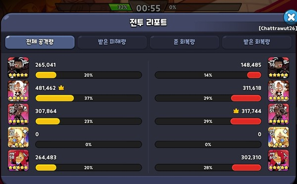

주관적인 아레나 티어
- 0티어 : 퓨어바닐라, 다크초코
- 0.5티어 : 블랙레이즌, 뱀파이어, 라떼
- 1티어 : 에스프레소, 감초, 정글전사, 호밀, 아몬드, 허브
블랙레이즌이 에스프레소보다 티어가 높은 이유
에스프레소는 딱 블랙레이즌 대체용.
라떼처럼 침묵 변수가 있는 것도 아니므로 라떼보다 티어가 낮음.
남은 시간 1분 이하일 때 쿠키 피해량이 증가하게 되는데 이때 블랙레이즌이 에스프레소를 순삭 시킨다.
뱀파이어가 힐러를 먼저 잘랐음에도 블랙레이즌에게 몰살당한 딜량표
라떼처럼 침묵 변수가 있는 것도 아니므로 라떼보다 티어가 낮음.
남은 시간 1분 이하일 때 쿠키 피해량이 증가하게 되는데 이때 블랙레이즌이 에스프레소를 순삭 시킨다.
뱀파이어가 힐러를 먼저 잘랐음에도 블랙레이즌에게 몰살당한 딜량표
쿠키 장단점
| 쿠키 | 장점 | 단점 | 추가설명 |
| 퓨어바닐라 | 원탑 힐러, 보호막 | 물몸 (보조옵 피감15%이상 필수) |
|
| 다크초코 | 원탑 탱커, 방깍 | 낮은 딜, 덱마다 3초다크초코/4초다크초코 정해서 써야하는 번거로움 |
|
| 블랙레이즌 | 높은 딜 (피해 %가 높음) |
표식을 기준으로 스킬을 쓰기 때문에 빗나갈 때가 있음 |  보라색 V표식 기준 양옆으로 피해줌 ex)스킬 시전시 에스프레소 스킬로 위치가 바뀌면 딜이 덜 들어간다 |
| 뱀파이어 | 단일딜러 원탑, 토벌전 원탑 | 힐러를 최대한 빠르게 잘라야한다, 호몬드덱에게 약하다 |
|
| 라떼 | 준수한 딜, 침묵/이동불가 cc기 | 에스프레소보다 몹몰이가 약해서 딜이 부분적으로 들어갈때가 있다(딜로스). | |
| 에스프레소 | 높은 딜, 몹몰이 가능, 딜로스가 없음 | 블랙레이즌에 취약함 | |
| 감초 | 방어력증가, 몹몰이가능, 퓨어바닐라와 같이 사용시 쫄에게도 보호막이 걸려서 시간끌기 가능, 짧은 쿨타임 | 쿨타임 토핑으로 인해 딜이 조금 부족함 | |
| 정글전사 | 3초 기절, 감초와 같이 사용시 몹몰이하기 좋음 | 낮은 딜 |  |
| 호몬드(거의 같이 사용하니 함께 설명) | 전투시작과 동시에 폭딜가능 | 카운터(정글전사, 라떼 등)가 명확함 | |
| 허브 | 힐러 NO.2 | 퓨어바닐라 대체용 (경험상 2성 퓨어바닐라가 5성 허브보다 좋은듯) |
토핑
- 라즈베리(공격력) : 블랙레이즌, 에스프레소, 공라떼, 호밀, 허브
- 아몬드(피해감소) : 다크초코, 아몬드
- 초콜릿(쿨타임감소) : 퓨어바닐라, 3초다크초코, 쿨라떼, 감초, 석류, 정글전사
덱 구성하기 전 참고할 점
- 별사탕 분산 시키지말고 키우던거 먼저 키우자(핵과금 제외). 0~1티어 중에서 별이랑 렙높은거 키우면 된다.
- 0티어라고 해서 반드시 1티어를 이기는건 아니다.
ex)에스프레소5성 > 블랙레이즌4성 / 에스프레소60렙 > 블랙레이즌55렙 - 전투력이 높다고 반드시 더 강한건 아니다.(뻥투력, 무공비차이 등) ※전투력은 침투형 = 마법형 > 그 외(전투력 5만정도 차이남), 공토핑 > 쿨토핑 순이다
- 스킬은 쿨이 가장 짧은 기준 오른쪽 부터 사용하나 변수로 꼬일수가 있다.
공라떼 / 쿨라떼
공라떼 장점 : 딜이 강하다.(깡딜 + 다크초코 방깍 → 라떼 순으로 딜하기 때문)
공라떼 단점 : 쿨라떼에 비해 침묵 빈도수가 적다.(스킬 캔슬 빈도수가 낮음)
블몬드덱 카운터 불가
쿨라떼 장점 : 라떼부터 스킬을 사용하여 빠르게 스킬순서를 꼬이게 하거나 스킬을 캔슬한다.
블몬드덱 카운터 가능
쿨라떼 단점 : 딜이 낮다(공격력 1만 정도 차이), 시작할때 다크초코 방깍을 못받고 딜한다.
전투시간이 길어지면 나도 스킬이 꼬일수가 있다.
남은시간 1분 / 피해량 100%증가일때 캔슬성공하면 쿨라떼 승리, 못하면 공라떼 승리

공라떼가 반드시 진다고하는데 3다크초코일땐 사진과 같이 커버가능하다.
덱상성
- 2힐러덱은 안정성이 높지만 뱀파에 약하다(힐러보다 뱀파를 먼저 키우기때문에 힐러가 짤릴 위험이 큼).
- 뱀파가 있는덱은 호몬드덱에 약하다(경험담).
- 호몬드덱은 정전덱에 약하다(정전없는 덱에는 강하다).
- 블몬드덱은 쿨라떼, 감초덱, 정전덱에 약하다.
※정전 = 정글전사
※다크초코(3초) = 시작쿨타임이 3초인 다크초코 세팅
※다크초코(4초) = 시작쿨타임이 4초인 다크초코 세팅
※다크초코(3초) = 시작쿨타임이 3초인 다크초코 세팅
※다크초코(4초) = 시작쿨타임이 4초인 다크초코 세팅
아레나 덱
블랙레이즌덱(보물 : 무공비 뿔 시계)
다크초코(3초) 블레 공라떼 퓨바 뱀파 ← 범용성이 높음. 힐러 1명이라 안정성이 보통임. 호몬드에 약하다.
다크초코(3초) 블레 공라떼 퓨바 허브 ← 라떼가 몹몰이해서 블레가 순삭시키는 덱. 다른덱에 비해 딜이 부족함.
*위 2덱에 쿨라떼 사용시에는 4초다크초코(보통 올피감토핑)를 사용해야 함.
다크초코(4초) 블레 감초 퓨바 정전 ← 호몬드, 블몬드 저격덱. 카운터 거의 없음. 다만 정전을 키워야함.
다크초코(4초) 블레 감초 퓨바 허브 ← 감초로 몹몰해서 블레가 순삭시키는 덱. 다른덱에 비해 딜이 부족함.
다크초코(4초) 블레 감초 허브 석류 ← 퓨바 없을때 2힐 하고싶으면 사용하는 덱. 다른덱에 비해 딜이 부족함.
다크초코(3초) 블레 공라떼 퓨바 허브 ← 라떼가 몹몰이해서 블레가 순삭시키는 덱. 다른덱에 비해 딜이 부족함.
*위 2덱에 쿨라떼 사용시에는 4초다크초코(보통 올피감토핑)를 사용해야 함.
다크초코(4초) 블레 감초 퓨바 정전 ← 호몬드, 블몬드 저격덱. 카운터 거의 없음. 다만 정전을 키워야함.
다크초코(4초) 블레 감초 퓨바 허브 ← 감초로 몹몰해서 블레가 순삭시키는 덱. 다른덱에 비해 딜이 부족함.
다크초코(4초) 블레 감초 허브 석류 ← 퓨바 없을때 2힐 하고싶으면 사용하는 덱. 다른덱에 비해 딜이 부족함.
호몬드덱(보물 : 무공비 사탕 시계, 무공비 사탕 낫)
다크초코(3초) 공라떼 퓨바 호몬드 ← 공라떼가 딜하고 호밀이 정리하는 덱. 정전에 약하다.
다크초코(4초) 쿨라떼 퓨바 호몬드 ← 공라떼보다 빠르게 호밀이 딜함. 다크초코 방깎을 못받고 시작. 정전에 약하다.
다크초코(3초) 허브 퓨바 호몬드 ← 높은 안정성. 다른덱에 비해 딜이 부족함. 정전에 약하다.
다크초코(3초) 에소 퓨바 호몬드 ← 에소로 딜하고 호밀이 정리하는 덱. 에소가 강할때 사용. 정전에 약하다.
다크초코(4초) 쿨라떼 퓨바 호몬드 ← 공라떼보다 빠르게 호밀이 딜함. 다크초코 방깎을 못받고 시작. 정전에 약하다.
다크초코(3초) 허브 퓨바 호몬드 ← 높은 안정성. 다른덱에 비해 딜이 부족함. 정전에 약하다.
다크초코(3초) 에소 퓨바 호몬드 ← 에소로 딜하고 호밀이 정리하는 덱. 에소가 강할때 사용. 정전에 약하다.
호밀단일덱(보물 : 무공비 뿔 시계)
다크초코(3초) 라떼 퓨바 호밀 뱀파 ← 호밀과 뱀파로 딜러, 힐러 동시에 짜르는 덱. 안정성이 보통임.
다크초코(3초) 허브 퓨바 호밀 뱀파 ← 높은 안정성. 다른덱에 비해 딜이 부족함. 호뱀조합 중에 가장 많이 보임.
다크초코(4초) 감초 퓨바 호밀 뱀파 ← 2힐러덱보다 감초의 보조딜이 가능해짐.
다크초코(3초) 허브 퓨바 호밀 뱀파 ← 높은 안정성. 다른덱에 비해 딜이 부족함. 호뱀조합 중에 가장 많이 보임.
다크초코(4초) 감초 퓨바 호밀 뱀파 ← 2힐러덱보다 감초의 보조딜이 가능해짐.
에소라떼덱(보물 : 무공비 뿔 시계)
다크초코(3초) 공라떼 에소 퓨바 뱀파 ← 범용성이 높음. 힐러 1명이라 안정성이 보통임. 블레, 호몬드에 약하다.
다크초코(3초) 공라떼 에소 허브 퓨바 ← 높은 안정성. 다른덱에 비해 딜이 부족함.
다크초코(3초) 공라떼 에소 감초 퓨바 ← 2힐러덱보다 감초의 보조딜이 가능해짐. 2힐러덱보다 추천.
다크초코(3초) 공라떼 에소 허브 석류 ← 퓨바 없을때 2힐 하고싶으면 사용하는 덱. 다른덱에 비해 딜이 부족함.
*위 4덱에 쿨라떼 사용시에는 4초다크초코(보통 올피감토핑)를 사용해야 함.
감초 공라떼 에소 퓨바 정전 ← 호몬드, 블몬드 저격덱. 딜보충을 위해 다크초코 제외함. 감초 죽으면 탱이 없음.
다크초코(4초) 쿨라떼 에소 퓨바 뱀파 ← 라떼가 스킬을 많이 꼬이게 가능. 라떼의 딜이 부족해짐.
다크초코(3초) 공라떼 에소 허브 퓨바 ← 높은 안정성. 다른덱에 비해 딜이 부족함.
다크초코(3초) 공라떼 에소 감초 퓨바 ← 2힐러덱보다 감초의 보조딜이 가능해짐. 2힐러덱보다 추천.
다크초코(3초) 공라떼 에소 허브 석류 ← 퓨바 없을때 2힐 하고싶으면 사용하는 덱. 다른덱에 비해 딜이 부족함.
*위 4덱에 쿨라떼 사용시에는 4초다크초코(보통 올피감토핑)를 사용해야 함.
감초 공라떼 에소 퓨바 정전 ← 호몬드, 블몬드 저격덱. 딜보충을 위해 다크초코 제외함. 감초 죽으면 탱이 없음.
다크초코(4초) 쿨라떼 에소 퓨바 뱀파 ← 라떼가 스킬을 많이 꼬이게 가능. 라떼의 딜이 부족해짐.
에소(라떼)단일덱
다크초코(3초) 에소(라떼) 감초 퓨바 뱀파 ← 감초로 탱킹 보완. 에소라떼덱보다 부족한 딜
다크초코(3초) 에소(라떼) 허브 퓨바 뱀파 ← 높은 안정성. 다른덱에 비해 딜이 부족함
다크초코(3초) 에소(라떼) 퓨바 뱀파 정전 ← 호몬드, 블몬드 저격덱. 블레덱에 보다는 부족한 딜
다크초코(3초) 에소(라떼) 감초 퓨바 정전 ← 호몬드, 블몬드 저격덱. 블레덱 보다는 부족한 딜
다크초코(3초) 에소(라떼) 허브 퓨바 뱀파 ← 높은 안정성. 다른덱에 비해 딜이 부족함
다크초코(3초) 에소(라떼) 퓨바 뱀파 정전 ← 호몬드, 블몬드 저격덱. 블레덱에 보다는 부족한 딜
다크초코(3초) 에소(라떼) 감초 퓨바 정전 ← 호몬드, 블몬드 저격덱. 블레덱 보다는 부족한 딜
블몬드덱
용쿠 블레 감초 정전 아몬드 ← 가성비덱 상대덱에 쿨감초 있으면 막힘. 정전있어도 막힘
용쿠 블레 에소 정전 아몬드 ← 가성비덱 상대덱에 쿨라떼 있으면 막힘. 정전있어도 막힘
용쿠 블레 에소 정전 아몬드 ← 가성비덱 상대덱에 쿨라떼 있으면 막힘. 정전있어도 막힘